| |
|
|||
ADUCCIONES Y SUS RELATOSEn el campo de la ufología y en el de la ciencia ficción se llama abducción al acto en el cual uno o más seres extraterrestres toman a un ser vivo terrestre contra su voluntad, lo secuestran y lo llevan a algún sitio determinado, generalmente a su propia nave espacial. |
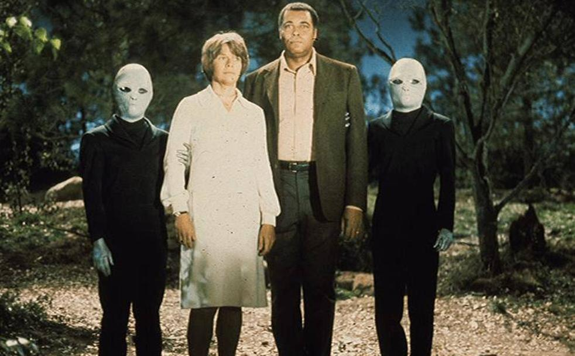 |
Betty y Barney Hill |
| Este hecho se enmarca como uno de los pioneros en abducciones extraterrestres y representó todo un hito en este tipo de procesos. Se trata de Betty y Barney Hill, una pareja que regresaba de sus vacaciones por una oscura carretera cuando de repente pudieron observar una extraña luz que se mueve enérgicamente. Al acercarse se dan cuenta de que es una nave tripulada por un ser bastante peculiar: un extraterrestre. Posteriormente sufrieron pérdida de memoria y con el tiempo emergieron las pesadillas y los vagos recuerdos de una sala de laboratorios. |
| 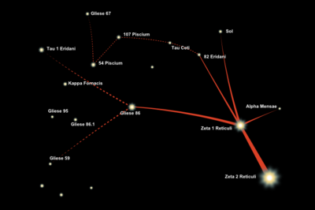 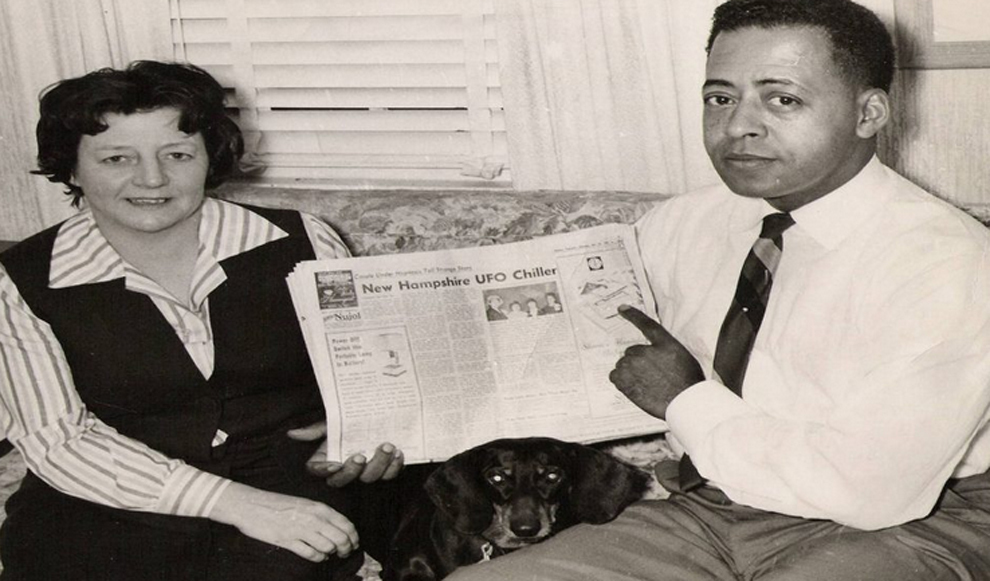 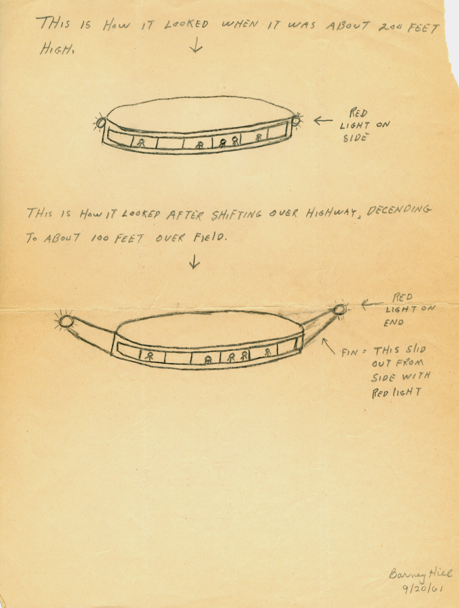 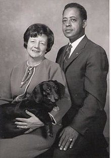 |
Betty Andreasson |
| Si hablamos de extraterrestres no podemos olvidar el nombre de Betty Andreasson. Una mujer que estaba sola en la cocina de su casa cuando de repente una potente luz atravesó la ventana de la misma iluminando toda la casa. Unos instantes más tarde, cinco criaturas extrañas se dirigieron al jardín trasero y se adentraron en el interior de la vivienda. A partir de aquí comenzaron a realizar una serie de experimentos con su familia y decidieron llevarse a la buena de Betty durante varias horas para experimentar con ella. |
 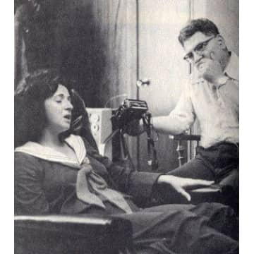
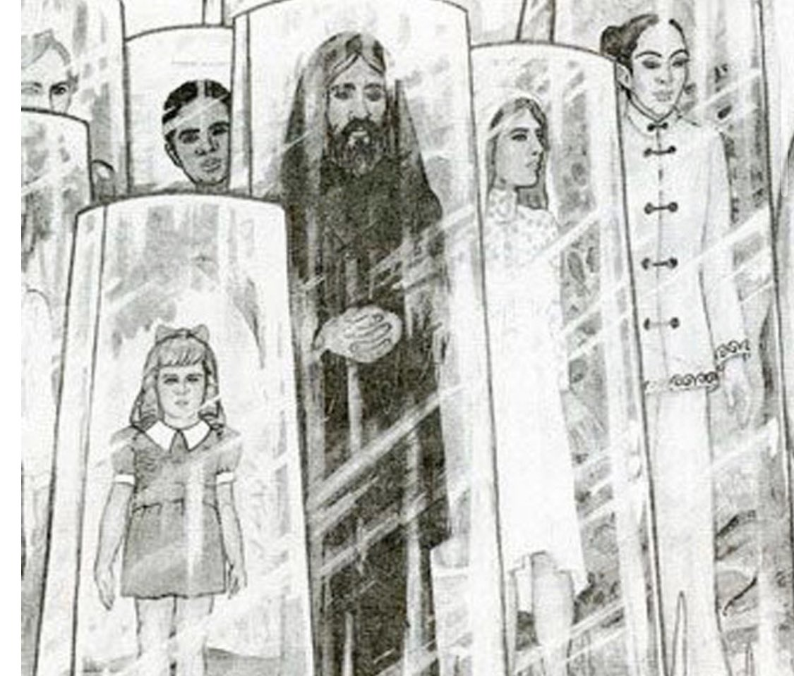
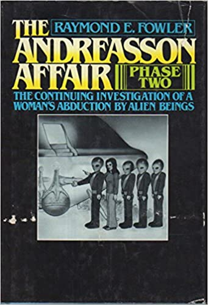
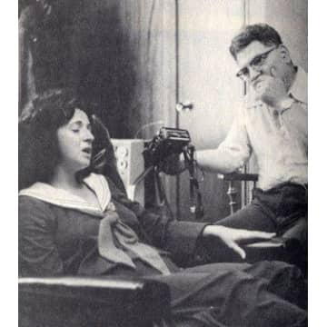
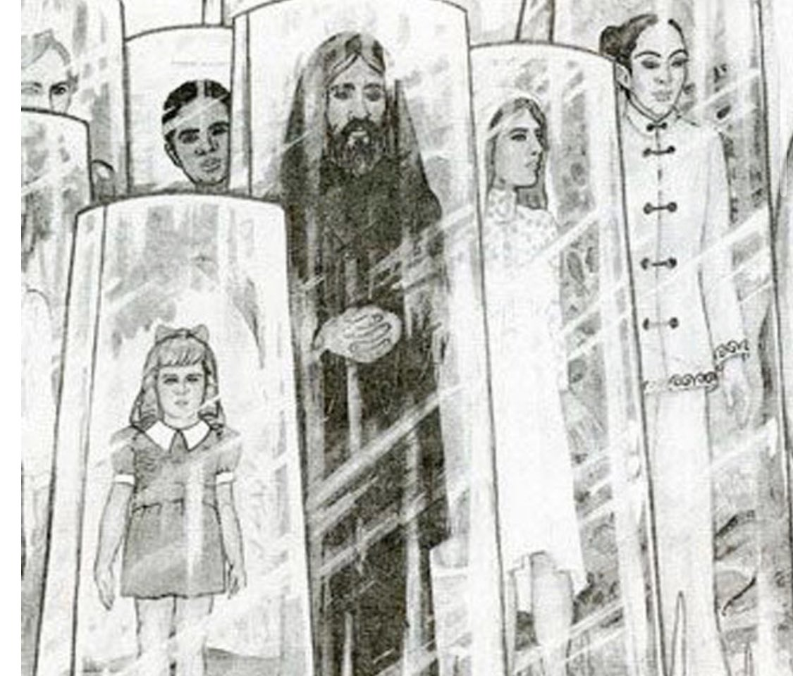
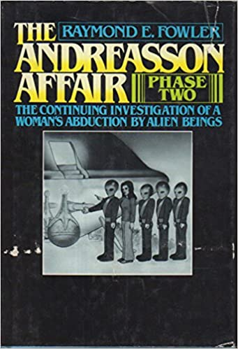
|
Herbert Schirmer |
| El oficial de policía Herbert Schimer se encontraba realizando su monótona ronda por su zona habitual cuando de repente vio que aparecía un gran camión con luces rojas. Como buen trabajador del cuerpo, Herbert decidió acercarse para asegurar que todo estuviera bien pero se llevó una sorpresa: las luces eran parte de una estructura oval que vio como segundos más tarde despegaba lanzando fuego a su paso. Posteriormente se dio cuenta que habían pasado más de tres horas desde que llegó al lugar de los hechos. |
 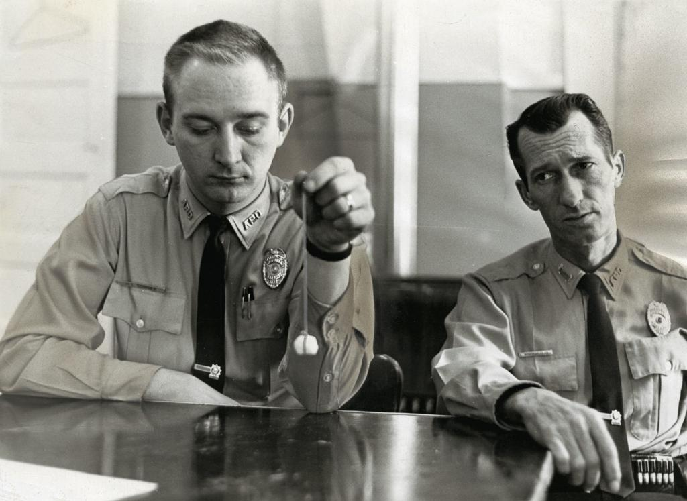
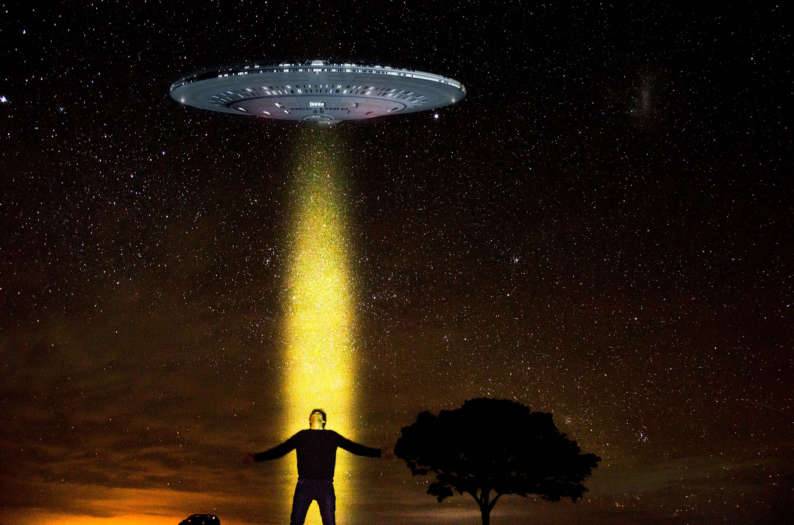
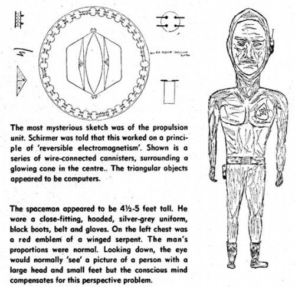
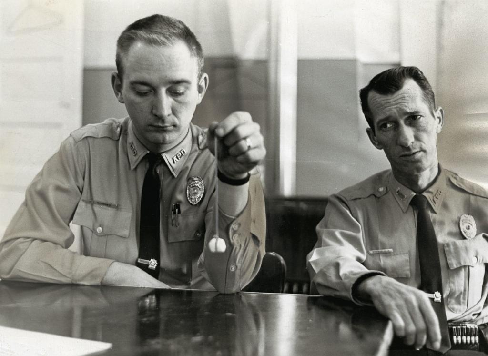
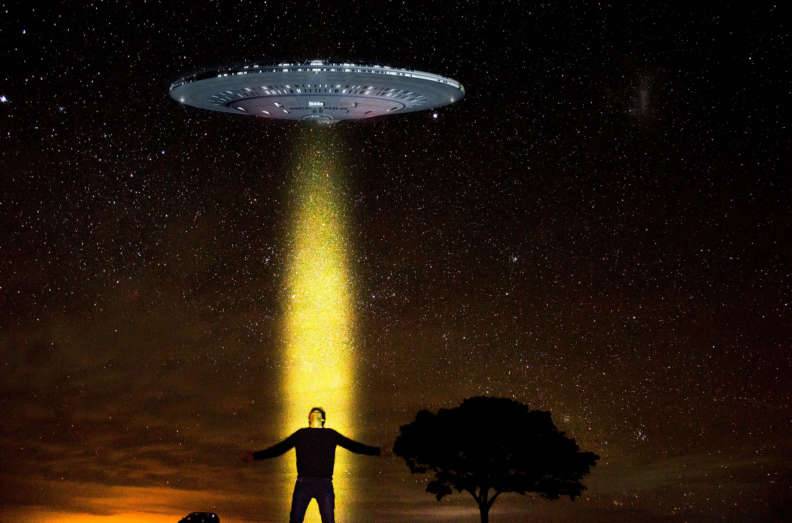
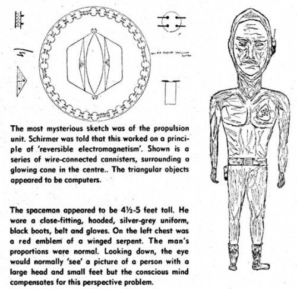
|
| Esta web Se Diseñado solo con HTML | Las Imagenes No son De Mi Propiedas Solo Son de Uso DIDACTICO | Los Enlaces a sitios externos No estar actualizados | Los Iconos no son relaes y nada de lo presente en este sitio web es con intencion de buscar seriedad |
| |
|
|
|
|
|